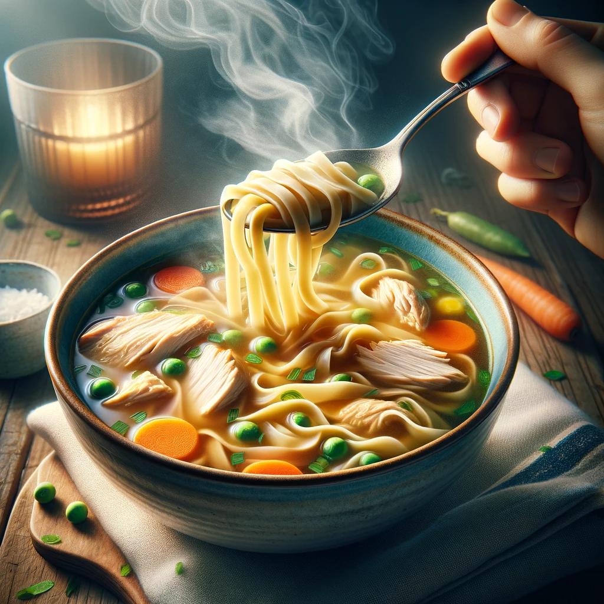

Grandma's Chicken Noodle Soup

Description
Chicken noodle soup is more than just a bowl of warmth; it's a soothing balm for the soul, a reminder of
nurturing love, and a timeless family favorite that has brought comfort and solace during both the best and
worst of times. This treasured chicken noodle soup recipe, handed down through generations in my family,
embodies the healing power of a simple yet hearty meal.
Ingredients
For the Soup:
- 1 whole chicken (about 4 pounds)
- 8 cups water
- 2 onions, peeled and quartered
- 4 carrots, peeled and chopped
- 4 celery stalks, chopped
- 3 cloves garlic, minced
- 2 bay leaves
- 1 teaspoon dried thyme
- Salt and pepper to taste
For the Noodles:
- 2 cups all-purpose flour
- 2 large eggs
- 1/2 teaspoon salt
- 2-3 tablespoons water
Steps:
- Place the whole chicken, water, onions, carrots, celery, garlic, bay leaves, dried thyme, salt, and pepper in a large stockpot.
- Bring the pot to a boil over high heat, then reduce the heat to low, cover, and simmer for 1 to 1.5 hours, or until the chicken is cooked through and tender.
- Remove the chicken from the pot and set it aside to cool slightly. Once cooled, shred the chicken meat discarding the skin and bones.
- While the chicken is cooling, prepare the noodles. In a mixing bowl, combine the flour, eggs, salt, and enough water to form a dough. Knead the dough on a floured surface until it's smooth and elastic.
- Roll out the dough to a thickness of about 1/8 inch and cut it into thin strips to make your noodles. Set them aside to dry for a few minutes.
- Bring the chicken broth in the pot back to a gentle simmer and add the homemade noodles. Cook for about 10-12 minutes until the noodles are tender.
- Return the shredded chicken to the pot and let it simmer for another 5-10 minutes to heat through.
- Taste the soup and adjust the seasoning with salt and pepper if needed.